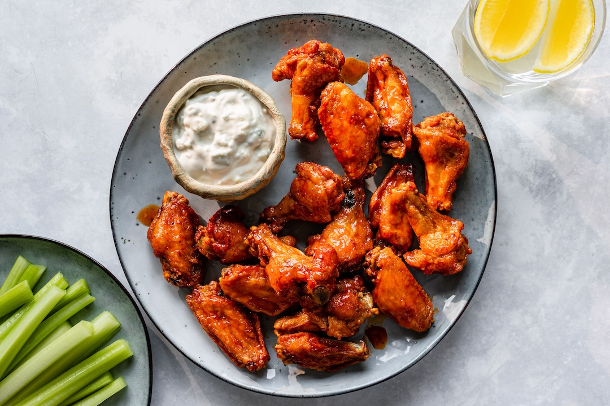

Hot Chicken Wings

Description
From Wikipedia. A Buffalo wing in American cuisine is an unbreaded chicken
wing section (flat or drumette) that is generally deep-fried, then coated
or dipped in a sauce consisting of a vinegar-based cayenne pepper hot
sauce and melted butter prior to serving. They are traditionally served
hot, along with celery sticks and carrot sticks, and a dip of blue cheese
dressing or, primarily outside of New York, ranch dressing. Buffalo wings
are named after Buffalo, New York, where they were invented, and have no
relation to the animal. They are often called simply chicken wings, hot
wings, or just wings.
Ingredients
For the Wings:
- 2 lbs chicken wings (drumettes and flats, separated)
- 1 tsp salt
- 1 tsp black pepper
- 1 tsp garlic powder
- 1 tbsp baking powder (optional, for extra crispy skin)
For the Sauce:
- 1/2 cup hot sauce (e.g., Frank's RedHot)
- 4 tbsp unsalted butter (melted)
- 1 tsp white vinegar (optional, for tanginess)
- 1 tsp garlic powder
- 1 tbsp honey (optional, for a slight sweetness)
For Frying:
-
A whole lot of vegetable oil (enough to fill a deep fryer/skillet
halfway)
Steps
-
Pat the chicken wings dry with paper towels (dry wings = crispier skin)
-
Toss the wings in a bowl with salt, pepper, garlic powder, and baking
powder (if using). The baking powder helps crisp the skin but is
optional
-
Heat the vegetable oil in a deep fryer or heavy-bottomed pot to 375°F
(190°C)
-
Fry the wings in batches to avoid overcrowding. Cook for 10-12 minutes,
or until the skin is golden brown and the internal temperature reaches
165°F (74°C)
- Transfer to a wire rack or paper towels to drain excess oil
-
In a small saucepan over low heat, melt the butter and whisk in the hot
sauce, garlic powder, vinegar, and honey (if using). Heat just until
combined and warm
-
Place the cooked wings in a large bowl, pour the hot sauce mixture over
them, and toss until evenly coated
-
Serve immediately with celery, carrots, and ranch (or blue cheese if
your tastebuds have deteriorated)